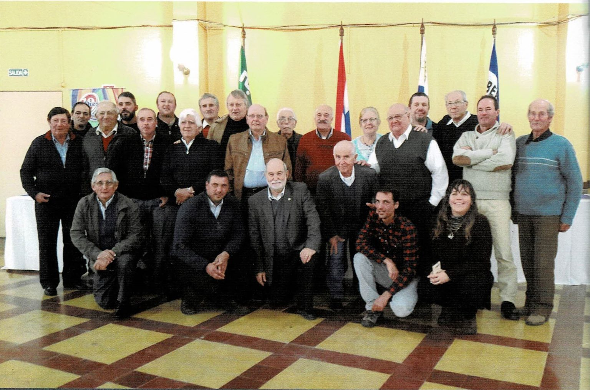

Desde 1931, la Sociedad de Fomento y Defensa Agraria, ha tenido como cometido la fortificación del productor agrario, no solo desde el producto en sí, sino desde distintas perspectivas: como persona; como miembro de la familia; como motor de la economía; y como engranaje de un complejo sistema llamado sociedad.

Siguiendo la línea de pensamiento expresada oportunamente por el entonces Presidente Félix Santoro, quien decía que "la mejor defensa para el consumidor consiste en fomentar la producción agrícola y granjera nacional". De esta forma y basado en los principios fundacionales de la Sociedad, es que se está al servicio del productor. No solo desde el asesoramiento técnico, sino que también buscando la sinergía que con todos sus socios se logra potenciando al individuo desde lo organizacional.